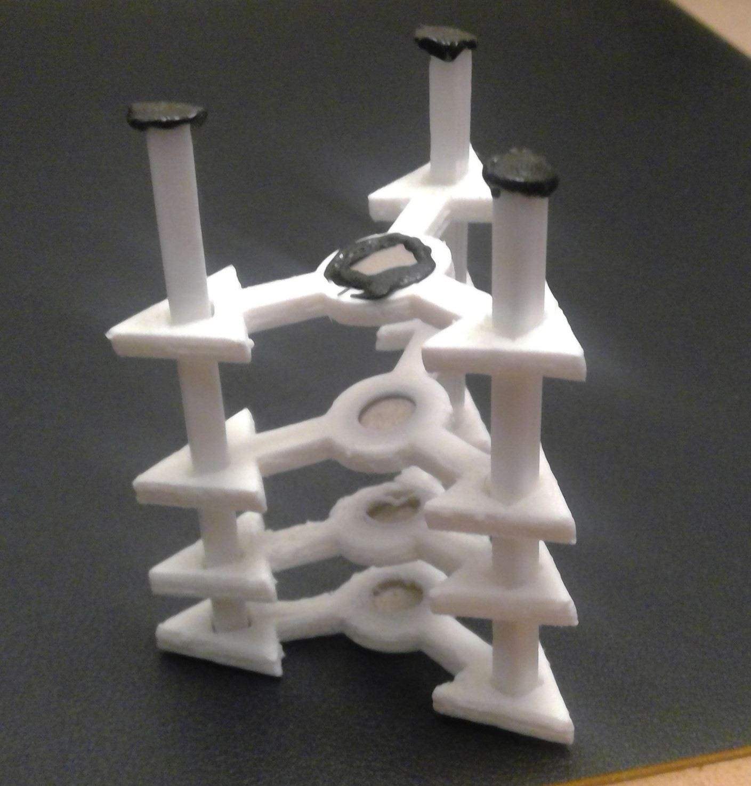
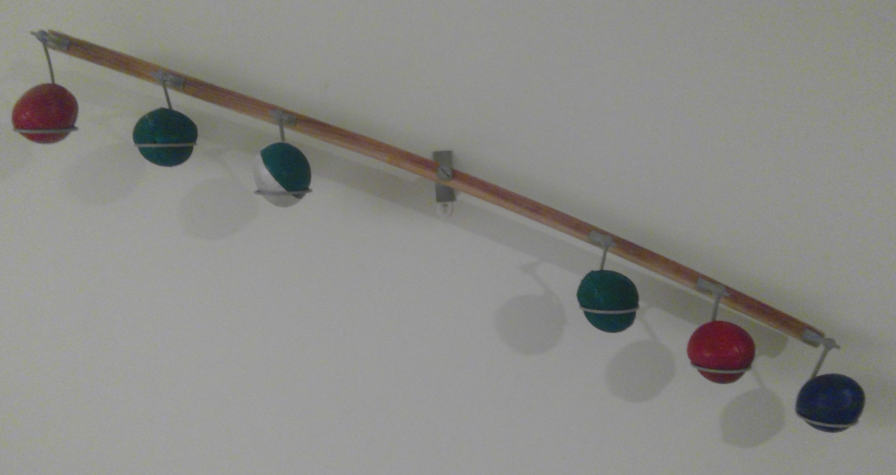
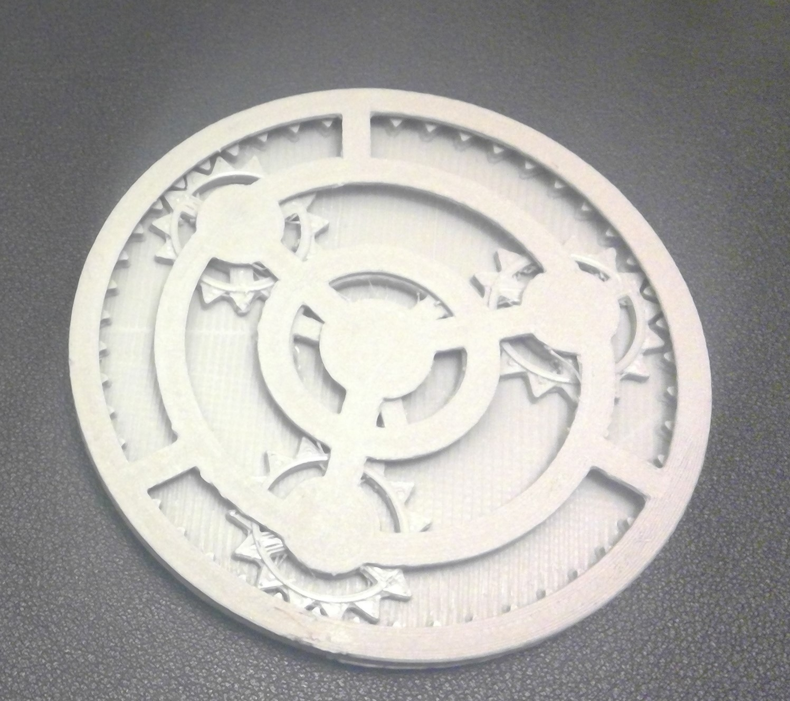

I think this is the coolest concept. My printer is the best money I have ever spent. While I have not made anything extremely useful, there is nothing so satisfying as watching an idea in your head literally solidify into a tangible object.
To start you need basic 3d design experience. Fortunately, I learned about mechanical design and using these software applications. But with Youtube and some tutorials, anyone can learn! I use fusion 360 and found the transition from SolidWorks very smooth. From there you create a part, send it to another application that transforms the design into a sequence of moves the printer will follow as it oozes hot plastic. This is how most home printers work, but there are many other cool printing processes! Here are a couple low quality images of my prints!
A magnet spring system that levitates when it's at rest. Very satisfying to push down and shake it!
A juggling ball holder that is also a kinetic sculpture. Depending on where you place the balls, the sculpture will swing for a little but until it finds the equilibrium.
A planetary gear coaster. Great to fidget with when you finish a drink!
My ultimate career goal is to create something useful, ingenious, and creative. As of now, I am far from that. However, with every print I improve. With every failure, I learn what not to do. The small success of this hobby make every failed attempt worth it. I highly encourage this hobby for anyone with the slightest interest in design. It's the future!